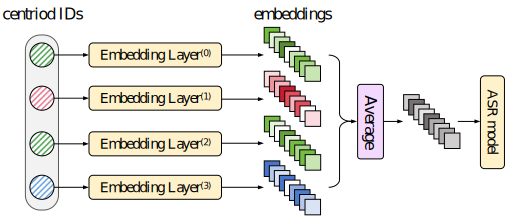

Bridging the Gap between Continuous and Informative Discrete Representations by Random Product Quantization
Abstract
Self-supervised learning (SSL) has become a core technique in speech processing, but the high dimensionality of its representations makes discretization essential for improving efficiency. However, existing discretization methods still suffer from significant information loss, resulting in a notable performance gap compared to continuous representations. To overcome these limitations, we propose two quantization-based discretization methods: Product Quantization (PQ) and Random Product Quantization (RPQ). PQ partitions the original feature space into multiple subspaces and independently quantizes each sub-vector, producing a fused set of discrete units that retain diverse information from different subspaces, thereby mitigating the loss associated with single-cluster quantization. RPQ further enhances representation diversity by randomly sampling feature dimensions multiple times to construct sub-vectors, thereby better capturing the variability in the data distribution. Theoretical analysis shows that RPQ reduces the correlation $\rho$ ($0 \leq \rho \leq 1$) between sub-quantizers, and its quantization error is lower-bounded by $\rho\varepsilon_{\text{kms}}$, where $\varepsilon_{\text{kms}}$ is the error of a single K-means quantizer. Experimental results show that, on the combined dataset constructed from LibriSpeech and ML-SUPERB, PQ and RPQ outperform standard K-means discretization, achieving relative improvements of 21.8% and 20.0% in word error rate (WER) on LibriSpeech, and 24.1% and 19.6% in character error rate (CER) on the ML-SUPERB, respectively. Moreover, their performance is competitive with, and in some cases even surpasses, that of continuous SSL representations.

Supplementary material for "Fig. 6: Heatmap of correlation between feature dimensions of WavLM-Large layer 21."
Reconstructed speech samples
| Original | Reconstructed (SSL) | Reconstructed (K-means) | Reconstructed (PQ) | Reconstructed (RPQ) |
|---|---|---|---|---|
Citation
@article{li2025bridging,
title={Bridging the Gap between Continuous and Informative Discrete Representations by Random Product Quantization},
author={Li, Xueqing and Ma, Hao and Li, Zehan and Zhu, Boyu and Jing, Ruihao and Kang, Jian and Li, Jie and Zhang, Chi and Zhang, Xiao-Lei and Li, Xuelong},
journal={arXiv preprint arXiv:2504.04721},
year={2025}
}